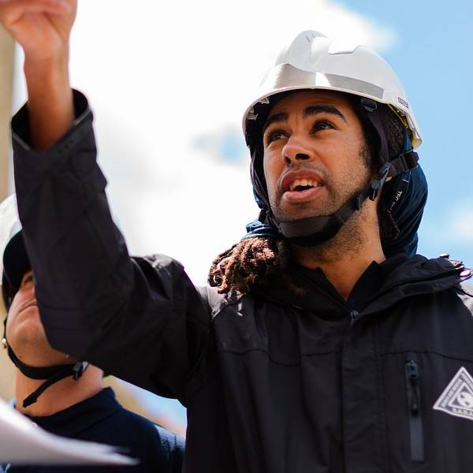
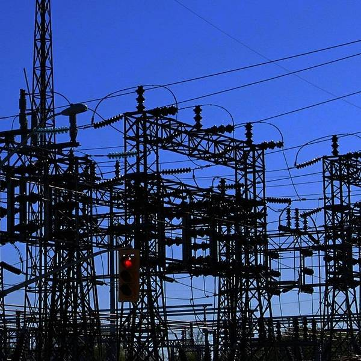
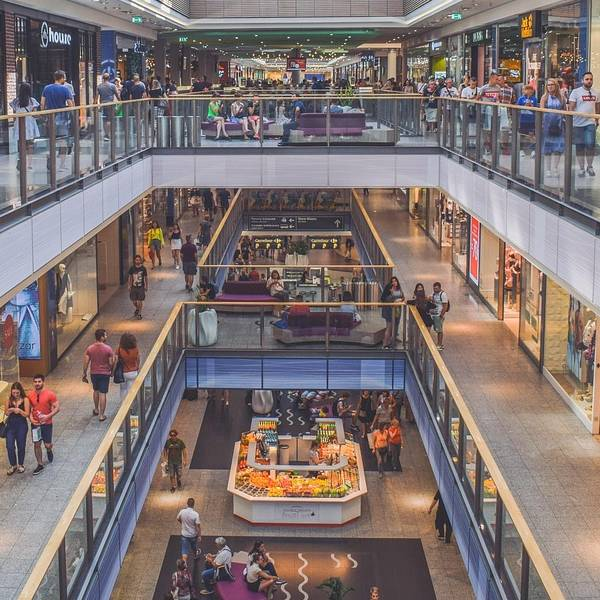
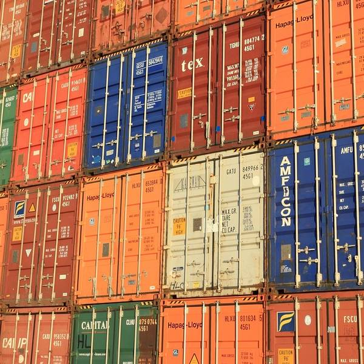

Storm and Disaster Shelters
Gridline stations double as fortified, climate-resilient shelters designed to provide safety and support during severe weather events, natural disasters, and emergencies. These multi-use structures are reinforced with hardened materials and feature backup power, food storage, and medical access protocols, giving cities a rapid response asset when it matters most.
Each shelter integrates seamlessly into the daily infrastructure of Gridline, converting from a travel hub into a haven during crises. We’re not just building transit stations — we’re building resilient communities.
Electric Grid Expansion & Energy Storage
Gridline is built atop a next-gen energy backbone. Our stations serve as energy nodes — integrating solar, wind, and kinetic energy capture to provide not just power for the trains, but also distributed energy support for nearby neighborhoods and industries. Transistor banks and battery walls store excess power and help stabilize regional grids.
This creates a dynamic smart grid that reduces strain, adds redundancy, and prepares each Gridline city for a more sustainable and connected future.
Shopping and Restaurants Within Stations
Each Gridline station is designed as a lifestyle hub, not just a point of transit. Our stations will include vibrant retail corridors, local artisan markets, and national restaurant chains — all curated to provide comfort, convenience, and culture for travelers and city locals alike.
Whether grabbing a quick bite, meeting a friend, or discovering a local boutique, the Gridline experience is as much about arrival as it is about departure.
Strategic Military Command Bunkers & Transportation
In select areas, Gridline infrastructure can support secure underground facilities designed for strategic command, continuity of government, and rapid response deployment. These facilities are engineered with hardened shielding and communications systems suitable for critical defense operations.
Gridline also offers high-speed, low-visibility military transport channels, helping ensure national readiness in times of need — all discreetly built into civilian infrastructure.
Commercial Office Space Opportunities
Gridline stations present a new frontier for commercial real estate. Above and around these hubs, we are designing modular office spaces available for leasing to startups, remote work collectives, enterprise firms, and innovation labs. Think of it as the 21st-century equivalent of building your business above Grand Central — but smarter, greener, and more connected.
With instant access to high-speed travel and dense urban cores, your business won’t just be present — it will be positioned.

Electric Bullet Train Railway
The core of Gridline is our advanced electric bullet train system — a national network of ultra-fast, emission-free trains designed to connect cities like never before. Capable of top speeds over 300mph, these trains offer quiet, smooth, and scenic rides across regional and long-distance routes.
Each train is powered by our sustainable energy network and built for comfort, accessibility, and efficiency. It’s not just faster travel — it’s smarter movement.
Nationwide Shipping Services
Gridline isn’t just about people — it’s about goods too. Our logistics grid allows for high-speed shipping across the contiguous United States using dedicated cargo trains on our network. Businesses and individuals can send packages across states in record time without relying on fuel-intensive trucking or air freight.
With real-time tracking, streamlined customs integration, and eco-conscious logistics, Gridline shipping is built for the new economy.
